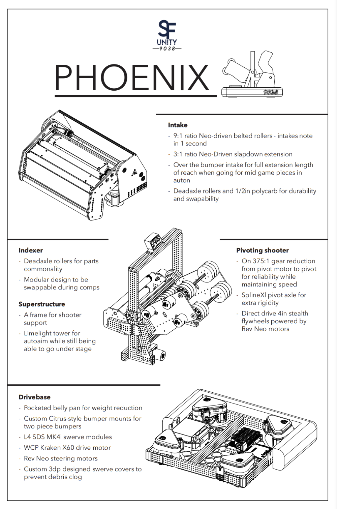

SF Unity / FRC Crescendo robot
Phoenix 2024
A chapter of the SF Unity Robotics project: subsystem packaging and integration work focused on clearance, cable routing, reliability, and fast repair access under FRC event pressure.

Contribution
Packaging under match pressure.
Kyle contributed to chassis packaging, intake/shooter layout, robust cable routing, and full-range-of-motion clearance checks. The design emphasized components that could survive field use and be reached quickly between matches.
Evidence
Robot and design poster.
The available poster and robot media summarize key subsystems and competition presentation material.

Reflection
Reliability is architecture.
Phoenix reinforced that packaging, cable routing, and repair access are performance decisions. A robot that is easier to inspect and repair is easier to improve under competition pressure.